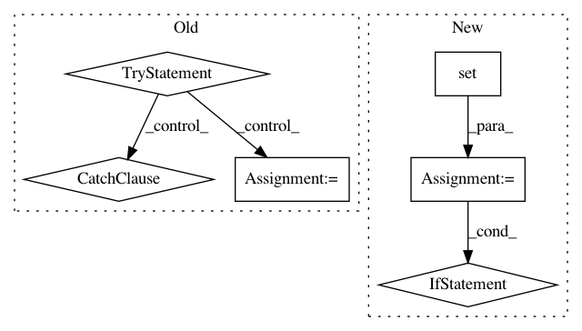

bfb5089ed59f1df8cf53a3b517ac6b091f539a26,homeassistant/components/device_tracker/nmap_tracker.py,NmapDeviceScanner,_update_info,#NmapDeviceScanner#,81
Before Change
nmap.run()
if nmap.rc == 0:
try:
results = NmapParser.parse(nmap.stdout)
self.last_results = []
for host in results.hosts:
if host.is_up():
if host.hostnames:
name = host.hostnames[0]
else:
name = host.ipv4
if host.mac:
mac = host.mac
else:
mac = _arp(host.ipv4)
if mac:
device = Device(mac, name)
self.last_results.append(device)
_LOGGER.info("nmap scan successful")
return True
except NmapParserException as parse_exc:
_LOGGER.error("failed to parse nmap results: %s",
parse_exc.msg)
self.last_results = []
return False
else:
self.last_results = []
_LOGGER.error(nmap.stderr)
return False
After Change
_LOGGER.info("Scanning")
options = "-F"
exclude_targets = set()
if self.home_interval:
now = datetime.now()
for host in self.last_results:
if host.last_update + self.home_interval > now:
exclude_targets.add(host)
if len(exclude_targets) > 0:
target_list = [t.ip for t in exclude_targets]
options += " --exclude {}".format(",".join(target_list))
nmap = NmapProcess(targets=self.hosts, options=options)
nmap.run()
if nmap.rc == 0:
if self._parse_results(nmap.stdout):
self.last_results.extend(exclude_targets)
else:
self.last_results = []
_LOGGER.error(nmap.stderr)
return False
In pattern: SUPERPATTERN
Frequency: 3
Non-data size: 6
Instances
Project Name: home-assistant/home-assistant
Commit Name: bfb5089ed59f1df8cf53a3b517ac6b091f539a26
Time: 2015-03-08
Author: andyt05@gmail.com
File Name: homeassistant/components/device_tracker/nmap_tracker.py
Class Name: NmapDeviceScanner
Method Name: _update_info
Project Name: nilmtk/nilmtk
Commit Name: 72f3f5bf50ed2d91cdcfbe2cf47120a2df8883cd
Time: 2014-11-26
Author: jack-list@xlk.org.uk
File Name: nilmtk/elecmeter.py
Class Name: ElecMeter
Method Name: _get_stat_from_cache_or_compute
Project Name: has2k1/plotnine
Commit Name: 8afc45fa9c6d70f74ce140ef1d1347a33099b8d6
Time: 2016-07-20
Author: has2k1@gmail.com
File Name: ggplotx/positions/position_jitterdodge.py
Class Name: position_jitterdodge
Method Name: setup_params